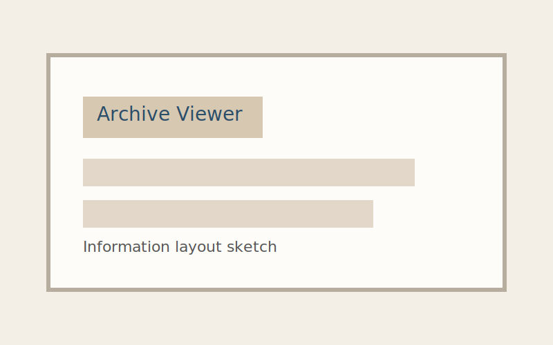
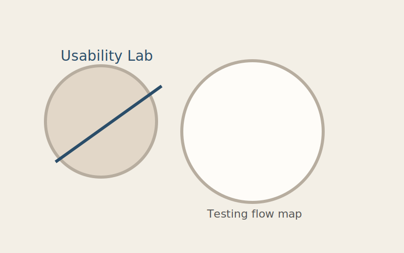

Archive Viewer
A public-facing archive interface that helps visitors explore thousands of items without losing context. Built to emphasize hierarchy, searchability, and a calm reading experience.

Role: UX design, information architecture, front-end prototype.
Usability Lab
A toolkit for research teams to standardize consent, session notes, and insight tagging. The focus was on repeatable workflows and minimal cognitive load.

Role: Research operations, UI design, documentation.
Workflow Studio
A lightweight planning tool that maps team handoffs from discovery to delivery. Designed to keep everyone aligned with a shared vocabulary and timeline.

Role: Product strategy, interaction design, front-end build.